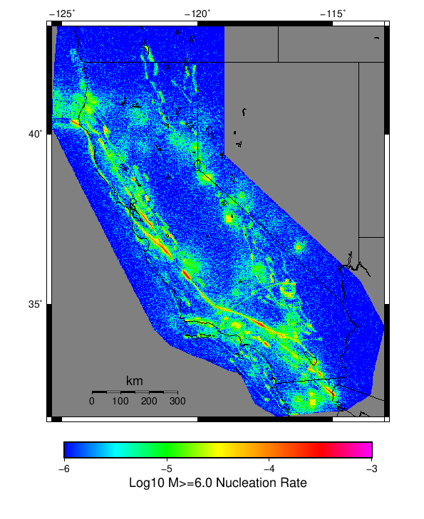

Start 2012, 500 yr, Scale Factor 1.0, Spontaneous, Historical Catalog Results
| Start 2012, 500 yr, Scale Factor 1.0, Spontaneous, Historical Catalog |
|---|
| Num Simulations | 1000 |
| Start Time | 2012/01/01 00:00:00 UTC |
| Start Time Epoch Milliseconds | 1325376000000 |
| Duration | 500 Years |
| Includes Spontaneous? | true |
| Trigger Ruptures | (none) |
| Historical Ruptures | 60366 Trigger Ruptures |
| First: M7.3 at 1852/01/05 04:40:39 UTC |
| Last: M3.2 at 2011/12/31 19:14:44 UTC |
| Largest: M7.9 at 1857/01/09 16:25:39 UTC |
| Config Generated With | u3etas_config_builder.sh --start-year 2012 --num-simulations 1000 --duration-years 500 --include-spontaneous --historical-catalog --scale-factor 1.0 --hpc-site USC_HPC --nodes 36 --hours 24 --queue scec |
Table Of Contents
Magnitude Frequency Distribution
(top)
Legend
- Mean (thick black line): mean annual rate across all 1000 catalogs
- 2.5%,97.5% (thin black lines): annual rate percentiles across all 1000 catalogs
- Median (thin blue line): median annual rate across all 1000 catalogs
- Mode (thin cyan line): modal annual rate across all 1000 catalogs (scaled to annualized value)
- 500 yr Probability (thin red line): 500 year probability calculated as the fraction of catalogs with at least 1 occurrence
- 500 yr Supraseismogenic Probability (thin dashed red line): same as above, but only for supraseismogenic ruptures on explicitly modeled UCERF3 faults
- 95% Conf (light red shaded region): binomial 95% confidence bounds on probability
| Mag | Mean | 2.5 %ile | 97.5 %ile | Median | Mode | 500 yr Probability | 500 yr Supra-Seis Prob |
|---|
| M≥5 | 7.070 | 6.444 | 7.764 | 7.058 | 7.048 | 1.000 (100.00%) | 1.000 (100.00%) |
| M≥5.1 | 5.594 | 5.074 | 6.156 | 5.588 | 5.606 | 1.000 (100.00%) | 1.000 (100.00%) |
| M≥5.2 | 4.418 | 4.002 | 4.866 | 4.412 | 4.456 | 1.000 (100.00%) | 1.000 (100.00%) |
| M≥5.3 | 3.485 | 3.144 | 3.844 | 3.478 | 3.548 | 1.000 (100.00%) | 1.000 (100.00%) |
| M≥5.4 | 2.746 | 2.460 | 3.038 | 2.744 | 2.694 | 1.000 (100.00%) | 1.000 (100.00%) |
| M≥5.5 | 2.160 | 1.926 | 2.400 | 2.158 | 2.114 | 1.000 (100.00%) | 1.000 (100.00%) |
| M≥5.6 | 1.694 | 1.500 | 1.892 | 1.690 | 1.716 | 1.000 (100.00%) | 1.000 (100.00%) |
| M≥5.7 | 1.323 | 1.168 | 1.488 | 1.320 | 1.340 | 1.000 (100.00%) | 1.000 (100.00%) |
| M≥5.8 | 1.028 | 0.904 | 1.164 | 1.026 | 1.006 | 1.000 (100.00%) | 1.000 (100.00%) |
| M≥5.9 | 0.784 | 0.684 | 0.896 | 0.782 | 0.774 | 1.000 (100.00%) | 1.000 (100.00%) |
| M≥6 | 0.621 | 0.536 | 0.714 | 0.618 | 0.628 | 1.000 (100.00%) | 1.000 (100.00%) |
| M≥6.1 | 0.479 | 0.406 | 0.556 | 0.476 | 0.484 | 1.000 (100.00%) | 1.000 (100.00%) |
| M≥6.2 | 0.378 | 0.322 | 0.440 | 0.376 | 0.382 | 1.000 (100.00%) | 1.000 (100.00%) |
| M≥6.3 | 0.298 | 0.246 | 0.352 | 0.298 | 0.290 | 1.000 (100.00%) | 1.000 (100.00%) |
| M≥6.4 | 0.234 | 0.190 | 0.282 | 0.234 | 0.240 | 1.000 (100.00%) | 1.000 (100.00%) |
| M≥6.5 | 0.181 | 0.144 | 0.220 | 0.182 | 0.186 | 1.000 (100.00%) | 1.000 (100.00%) |
| M≥6.6 | 0.142 | 0.110 | 0.174 | 0.142 | 0.148 | 1.000 (100.00%) | 1.000 (100.00%) |
| M≥6.7 | 0.109 | 0.084 | 0.138 | 0.110 | 0.110 | 1.000 (100.00%) | 1.000 (100.00%) |
| M≥6.8 | 0.086 | 0.064 | 0.110 | 0.086 | 0.088 | 1.000 (100.00%) | 1.000 (100.00%) |
| M≥6.9 | 0.067 | 0.048 | 0.088 | 0.068 | 0.072 | 1.000 (100.00%) | 1.000 (100.00%) |
| M≥7 | 0.053 | 0.036 | 0.070 | 0.052 | 0.050 | 1.000 (100.00%) | 1.000 (100.00%) |
| M≥7.1 | 0.041 | 0.026 | 0.056 | 0.040 | 0.038 | 1.000 (100.00%) | 1.000 (100.00%) |
| M≥7.2 | 0.031 | 0.020 | 0.044 | 0.030 | 0.030 | 1.000 (100.00%) | 1.000 (100.00%) |
| M≥7.3 | 0.025 | 0.014 | 0.036 | 0.024 | 0.024 | 1.000 (100.00%) | 1.000 (100.00%) |
| M≥7.4 | 0.019 | 0.010 | 0.030 | 0.018 | 0.018 | 1.000 (100.00%) | 1.000 (100.00%) |
| M≥7.5 | 0.014 | 8.00E-3 | 0.022 | 0.014 | 0.014 | 1.000 (100.00%) | 1.000 (100.00%) |
| M≥7.6 | 0.011 | 6.00E-3 | 0.018 | 0.010 | 0.010 | 1.000 (100.00%) | 1.000 (100.00%) |
| M≥7.7 | 7.62E-3 | 4.00E-3 | 0.012 | 8.00E-3 | 8.00E-3 | 0.999 (99.90%) | 0.999 (99.90%) |
| M≥7.8 | 5.39E-3 | 2.00E-3 | 0.010 | 6.00E-3 | 6.00E-3 | 0.990 (99.00%) | 0.990 (99.00%) |
| M≥7.9 | 3.01E-3 | 0.000 | 6.00E-3 | 2.00E-3 | 2.00E-3 | 0.876 (87.60%) | 0.876 (87.60%) |
| M≥8 | 1.60E-3 | 0.000 | 4.00E-3 | 2.00E-3 | 2.00E-3 | 0.618 (61.80%) | 0.618 (61.80%) |
| M≥8.1 | 7.68E-4 | 0.000 | 4.00E-3 | 0.000 | 0.000 | 0.340 (34.00%) | 0.340 (34.00%) |
| M≥8.2 | 3.58E-4 | 0.000 | 2.00E-3 | 0.000 | 0.000 | 0.171 (17.10%) | 0.171 (17.10%) |
| M≥8.3 | 7.40E-5 | 0.000 | 2.00E-3 | 0.000 | 0.000 | 0.037 (3.70%) | 0.037 (3.70%) |
| M≥8.4 | 0.000 | 0.000 | 0.000 | 0.000 | 0.000 | 0.000 (0.00%) | 0.000 (0.00%) |
| M≥8.5 | 0.000 | 0.000 | 0.000 | 0.000 | 0.000 | 0.000 (0.00%) | 0.000 (0.00%) |
| M≥8.6 | 0.000 | 0.000 | 0.000 | 0.000 | 0.000 | 0.000 (0.00%) | 0.000 (0.00%) |
| M≥8.7 | 0.000 | 0.000 | 0.000 | 0.000 | 0.000 | 0.000 (0.00%) | 0.000 (0.00%) |
| M≥8.8 | 0.000 | 0.000 | 0.000 | 0.000 | 0.000 | 0.000 (0.00%) | 0.000 (0.00%) |
| M≥8.9 | 0.000 | 0.000 | 0.000 | 0.000 | 0.000 | 0.000 (0.00%) | 0.000 (0.00%) |
| M≥9 | 0.000 | 0.000 | 0.000 | 0.000 | 0.000 | 0.000 (0.00%) | 0.000 (0.00%) |
Long Term Rate Variability
(top)
162 Year Variability
(top)

Download CSV Here
| Magnitude | Mean | Median | Mode | Std. Dev. | 2.5 %-ile | 16 %-ile | 84 %-ile | 97.5 %-ile |
|---|
| 5.0 | 7.068675 | 7.0617285 | 7.1419754 | 0.67379016 | 5.8209877 | 6.3950615 | 7.7222223 | 8.493827 |
| 5.1 | 5.5932302 | 5.580247 | 5.5061727 | 0.54185194 | 4.5925927 | 5.0617285 | 6.117284 | 6.7469134 |
| 5.2 | 4.4173293 | 4.4074073 | 4.4135804 | 0.43447748 | 3.6111112 | 3.9876542 | 4.839506 | 5.3209877 |
| 5.3 | 3.4843931 | 3.4691358 | 3.4567902 | 0.35114595 | 2.8271606 | 3.1358025 | 3.8271606 | 4.2098765 |
| 5.4 | 2.745965 | 2.7345679 | 2.691358 | 0.2825823 | 2.2160494 | 2.4691358 | 3.0185184 | 3.3209877 |
| 5.5 | 2.1604073 | 2.154321 | 2.1111112 | 0.23020835 | 1.7222222 | 1.9320987 | 2.3888888 | 2.6358025 |
| 5.6 | 1.6942633 | 1.6851852 | 1.6790123 | 0.18691695 | 1.3333334 | 1.5061729 | 1.8765432 | 2.074074 |
| 5.7 | 1.3237078 | 1.3209877 | 1.345679 | 0.15044995 | 1.037037 | 1.1666666 | 1.4691358 | 1.6296296 |
| 5.8 | 1.0283684 | 1.0246913 | 1.0246913 | 0.122006044 | 0.7962963 | 0.9074074 | 1.1481482 | 1.2777778 |
| 5.9 | 0.7842716 | 0.7777778 | 0.77160496 | 0.09954655 | 0.59876543 | 0.6851852 | 0.88271606 | 0.9876543 |
| 6.0 | 0.6215226 | 0.61728394 | 0.59876543 | 0.081828915 | 0.4691358 | 0.54320985 | 0.7037037 | 0.79012346 |
| 6.1 | 0.4786749 | 0.47530866 | 0.46296296 | 0.06803385 | 0.35185185 | 0.41358024 | 0.54320985 | 0.6234568 |
| 6.2 | 0.37811112 | 0.37654322 | 0.3580247 | 0.05774536 | 0.27160493 | 0.32098764 | 0.4382716 | 0.5 |
| 6.3 | 0.29847324 | 0.2962963 | 0.29012346 | 0.049721543 | 0.20987654 | 0.25308642 | 0.34567901 | 0.40123457 |
| 6.4 | 0.23444033 | 0.2345679 | 0.22839506 | 0.042179577 | 0.15432099 | 0.19135803 | 0.2777778 | 0.32098764 |
| 6.5 | 0.18131481 | 0.17901234 | 0.16666667 | 0.03602945 | 0.11728395 | 0.14814815 | 0.21604939 | 0.25925925 |
| 6.6 | 0.14146708 | 0.14197531 | 0.13580246 | 0.030321734 | 0.086419754 | 0.11111111 | 0.17283951 | 0.2037037 |
| 6.7 | 0.1093642 | 0.11111111 | 0.09876543 | 0.025777098 | 0.061728396 | 0.086419754 | 0.13580246 | 0.16049382 |
| 6.8 | 0.086246915 | 0.086419754 | 0.08024691 | 0.02206691 | 0.043209877 | 0.061728396 | 0.10493827 | 0.13580246 |
| 6.9 | 0.06719342 | 0.06790123 | 0.061728396 | 0.019298501 | 0.030864198 | 0.049382716 | 0.086419754 | 0.10493827 |
| 7.0 | 0.052884772 | 0.055555556 | 0.055555556 | 0.016644426 | 0.024691358 | 0.037037037 | 0.06790123 | 0.086419754 |
| 7.1 | 0.04051852 | 0.037037037 | 0.037037037 | 0.014312066 | 0.012345679 | 0.024691358 | 0.055555556 | 0.06790123 |
| 7.2 | 0.030763375 | 0.030864198 | 0.030864198 | 0.012016173 | 0.012345679 | 0.018518519 | 0.043209877 | 0.055555556 |
| 7.3 | 0.024477366 | 0.024691358 | 0.024691358 | 0.010449714 | 0.0061728396 | 0.012345679 | 0.037037037 | 0.049382716 |
| 7.4 | 0.019055555 | 0.018518519 | 0.018518519 | 0.009168623 | 0.0061728396 | 0.012345679 | 0.030864198 | 0.037037037 |
| 7.5 | 0.013853909 | 0.012345679 | 0.012345679 | 0.0076697767 | 0.0 | 0.0061728396 | 0.018518519 | 0.030864198 |
| 7.6 | 0.010559671 | 0.012345679 | 0.0061728396 | 0.006479973 | 0.0 | 0.0061728396 | 0.018518519 | 0.024691358 |
| 7.7 | 0.0075761317 | 0.0061728396 | 0.0061728396 | 0.005290539 | 0.0 | 0.0 | 0.012345679 | 0.018518519 |
| 7.8 | 0.0053580245 | 0.0061728396 | 0.0061728396 | 0.0044857706 | 0.0 | 0.0 | 0.012345679 | 0.012345679 |
| 7.9 | 0.0029917695 | 0.0 | 0.0 | 0.0035560888 | 0.0 | 0.0 | 0.0061728396 | 0.012345679 |
| 8.0 | 0.001600823 | 0.0 | 0.0 | 0.0028162557 | 0.0 | 0.0 | 0.0061728396 | 0.0061728396 |
| 8.1 | 7.592593E-4 | 0.0 | 0.0 | 0.0020402216 | 0.0 | 0.0 | 0.0 | 0.0061728396 |
| 8.2 | 3.4979425E-4 | 0.0 | 0.0 | 0.0014274267 | 0.0 | 0.0 | 0.0 | 0.0061728396 |
| 8.3 | 7.407407E-5 | 0.0 | 0.0 | 6.722433E-4 | 0.0 | 0.0 | 0.0 | 0.0 |
| 8.4 | 0.0 | 0.0 | 0.0 | 0.0 | 0.0 | 0.0 | 0.0 | 0.0 |
| 8.5 | 0.0 | 0.0 | 0.0 | 0.0 | 0.0 | 0.0 | 0.0 | 0.0 |
| 8.6 | 0.0 | 0.0 | 0.0 | 0.0 | 0.0 | 0.0 | 0.0 | 0.0 |
| 8.7 | 0.0 | 0.0 | 0.0 | 0.0 | 0.0 | 0.0 | 0.0 | 0.0 |
| 8.8 | 0.0 | 0.0 | 0.0 | 0.0 | 0.0 | 0.0 | 0.0 | 0.0 |
| 8.9 | 0.0 | 0.0 | 0.0 | 0.0 | 0.0 | 0.0 | 0.0 | 0.0 |
| 9.0 | 0.0 | 0.0 | 0.0 | 0.0 | 0.0 | 0.0 | 0.0 | 0.0 |
80 Year Variability
(top)

Download CSV Here
| Magnitude | Mean | Median | Mode | Std. Dev. | 2.5 %-ile | 16 %-ile | 84 %-ile | 97.5 %-ile |
|---|
| 5.0 | 7.0711937 | 6.9875 | 7.375 | 1.0361298 | 5.325 | 6.0375 | 8.1 | 9.3625 |
| 5.1 | 5.595135 | 5.5375 | 5.075 | 0.8312239 | 4.175 | 4.775 | 6.425 | 7.4 |
| 5.2 | 4.41871 | 4.375 | 3.95 | 0.6628593 | 3.2875 | 3.7625 | 5.075 | 5.8625 |
| 5.3 | 3.485479 | 3.45 | 3.3125 | 0.532581 | 2.5625 | 2.95 | 4.0125 | 4.6375 |
| 5.4 | 2.7468271 | 2.725 | 2.6375 | 0.42844203 | 2.0 | 2.325 | 3.1625 | 3.675 |
| 5.5 | 2.1610167 | 2.1375 | 2.2 | 0.34565789 | 1.55 | 1.8125 | 2.5 | 2.8875 |
| 5.6 | 1.6948271 | 1.675 | 1.55 | 0.2787077 | 1.2 | 1.4125 | 1.9625 | 2.2875 |
| 5.7 | 1.3242291 | 1.3125 | 1.225 | 0.22371039 | 0.925 | 1.1 | 1.5375 | 1.8 |
| 5.8 | 1.0286688 | 1.025 | 1.025 | 0.1798523 | 0.7125 | 0.85 | 1.2 | 1.4 |
| 5.9 | 0.78445417 | 0.775 | 0.75 | 0.14493768 | 0.525 | 0.6375 | 0.925 | 1.0875 |
| 6.0 | 0.621675 | 0.6125 | 0.625 | 0.120286554 | 0.4 | 0.5 | 0.7375 | 0.875 |
| 6.1 | 0.47879165 | 0.475 | 0.5 | 0.09988219 | 0.3 | 0.375 | 0.575 | 0.6875 |
| 6.2 | 0.37822708 | 0.375 | 0.35 | 0.084478915 | 0.225 | 0.3 | 0.4625 | 0.5625 |
| 6.3 | 0.29865626 | 0.3 | 0.2875 | 0.072284 | 0.1625 | 0.225 | 0.3625 | 0.45 |
| 6.4 | 0.23463126 | 0.2375 | 0.25 | 0.0618351 | 0.125 | 0.175 | 0.3 | 0.3625 |
| 6.5 | 0.18147917 | 0.175 | 0.1625 | 0.052922387 | 0.0875 | 0.125 | 0.2375 | 0.2875 |
| 6.6 | 0.14164375 | 0.1375 | 0.1375 | 0.045082867 | 0.0625 | 0.1 | 0.1875 | 0.2375 |
| 6.7 | 0.10949167 | 0.1125 | 0.1 | 0.0384545 | 0.0375 | 0.075 | 0.15 | 0.1875 |
| 6.8 | 0.0863625 | 0.0875 | 0.0875 | 0.033324253 | 0.025 | 0.05 | 0.125 | 0.15 |
| 6.9 | 0.067295834 | 0.0625 | 0.0625 | 0.028952261 | 0.0125 | 0.0375 | 0.1 | 0.125 |
| 7.0 | 0.052941665 | 0.05 | 0.05 | 0.02532796 | 0.0125 | 0.025 | 0.075 | 0.1125 |
| 7.1 | 0.040570833 | 0.0375 | 0.0375 | 0.021933235 | 0.0 | 0.025 | 0.0625 | 0.0875 |
| 7.2 | 0.030797917 | 0.025 | 0.025 | 0.018809916 | 0.0 | 0.0125 | 0.05 | 0.075 |
| 7.3 | 0.024510417 | 0.025 | 0.025 | 0.016467717 | 0.0 | 0.0125 | 0.0375 | 0.0625 |
| 7.4 | 0.019075 | 0.0125 | 0.0125 | 0.014369804 | 0.0 | 0.0 | 0.0375 | 0.05 |
| 7.5 | 0.013864583 | 0.0125 | 0.0125 | 0.012083079 | 0.0 | 0.0 | 0.025 | 0.0375 |
| 7.6 | 0.01056875 | 0.0125 | 0.0125 | 0.010351208 | 0.0 | 0.0 | 0.025 | 0.0375 |
| 7.7 | 0.007575 | 0.0 | 0.0 | 0.00857117 | 0.0 | 0.0 | 0.0125 | 0.025 |
| 7.8 | 0.005352083 | 0.0 | 0.0 | 0.0072732717 | 0.0 | 0.0 | 0.0125 | 0.025 |
| 7.9 | 0.0029958333 | 0.0 | 0.0 | 0.005617034 | 0.0 | 0.0 | 0.0125 | 0.0125 |
| 8.0 | 0.0016020833 | 0.0 | 0.0 | 0.004246798 | 0.0 | 0.0 | 0.0 | 0.0125 |
| 8.1 | 7.625E-4 | 0.0 | 0.0 | 0.0029918782 | 0.0 | 0.0 | 0.0 | 0.0125 |
| 8.2 | 3.5208333E-4 | 0.0 | 0.0 | 0.0020682823 | 0.0 | 0.0 | 0.0 | 0.0125 |
| 8.3 | 7.2916664E-5 | 0.0 | 0.0 | 9.51994E-4 | 0.0 | 0.0 | 0.0 | 0.0 |
| 8.4 | 0.0 | 0.0 | 0.0 | 0.0 | 0.0 | 0.0 | 0.0 | 0.0 |
| 8.5 | 0.0 | 0.0 | 0.0 | 0.0 | 0.0 | 0.0 | 0.0 | 0.0 |
| 8.6 | 0.0 | 0.0 | 0.0 | 0.0 | 0.0 | 0.0 | 0.0 | 0.0 |
| 8.7 | 0.0 | 0.0 | 0.0 | 0.0 | 0.0 | 0.0 | 0.0 | 0.0 |
| 8.8 | 0.0 | 0.0 | 0.0 | 0.0 | 0.0 | 0.0 | 0.0 | 0.0 |
| 8.9 | 0.0 | 0.0 | 0.0 | 0.0 | 0.0 | 0.0 | 0.0 | 0.0 |
| 9.0 | 0.0 | 0.0 | 0.0 | 0.0 | 0.0 | 0.0 | 0.0 | 0.0 |
28 Year Variability
(top)
Download CSV Here
| Magnitude | Mean | Median | Mode | Std. Dev. | 2.5 %-ile | 16 %-ile | 84 %-ile | 97.5 %-ile |
|---|
| 5.0 | 7.071954 | 6.714286 | 6.178571 | 1.8185434 | 4.535714 | 5.428571 | 8.75 | 11.642858 |
| 5.1 | 5.595998 | 5.321429 | 4.928571 | 1.4567957 | 3.5357144 | 4.285714 | 6.928571 | 9.25 |
| 5.2 | 4.419326 | 4.214286 | 3.857143 | 1.1631182 | 2.7142856 | 3.357143 | 5.5 | 7.321429 |
| 5.3 | 3.4857814 | 3.3214285 | 3.107143 | 0.93245655 | 2.107143 | 2.642857 | 4.357143 | 5.785714 |
| 5.4 | 2.7470105 | 2.642857 | 2.5357144 | 0.7476332 | 1.6428572 | 2.0357144 | 3.4285715 | 4.535714 |
| 5.5 | 2.1611764 | 2.0714285 | 1.9285715 | 0.6014988 | 1.25 | 1.6071428 | 2.7142856 | 3.5714285 |
| 5.6 | 1.694939 | 1.6428572 | 1.5714285 | 0.48288622 | 0.9285714 | 1.25 | 2.142857 | 2.8214285 |
| 5.7 | 1.3242353 | 1.2857143 | 1.2857143 | 0.3876698 | 0.71428573 | 0.96428573 | 1.6785715 | 2.2142856 |
| 5.8 | 1.0286512 | 1.0 | 0.9285714 | 0.3116661 | 0.53571427 | 0.71428573 | 1.3214285 | 1.75 |
| 5.9 | 0.7844538 | 0.75 | 0.75 | 0.2503218 | 0.35714287 | 0.53571427 | 1.0357143 | 1.3571428 |
| 6.0 | 0.6217731 | 0.60714287 | 0.5714286 | 0.20821607 | 0.2857143 | 0.42857143 | 0.8214286 | 1.0714285 |
| 6.1 | 0.47889915 | 0.4642857 | 0.42857143 | 0.17360865 | 0.17857143 | 0.32142857 | 0.64285713 | 0.85714287 |
| 6.2 | 0.37831303 | 0.35714287 | 0.35714287 | 0.14714946 | 0.14285715 | 0.25 | 0.53571427 | 0.71428573 |
| 6.3 | 0.29871428 | 0.2857143 | 0.2857143 | 0.12659965 | 0.071428575 | 0.17857143 | 0.42857143 | 0.5714286 |
| 6.4 | 0.23467436 | 0.21428572 | 0.21428572 | 0.10831563 | 0.071428575 | 0.14285715 | 0.35714287 | 0.4642857 |
| 6.5 | 0.18153572 | 0.17857143 | 0.14285715 | 0.09292526 | 0.035714287 | 0.10714286 | 0.2857143 | 0.39285713 |
| 6.6 | 0.14166807 | 0.14285715 | 0.10714286 | 0.07958575 | 0.0 | 0.071428575 | 0.21428572 | 0.32142857 |
| 6.7 | 0.1095084 | 0.10714286 | 0.071428575 | 0.06806197 | 0.0 | 0.035714287 | 0.17857143 | 0.25 |
| 6.8 | 0.08640126 | 0.071428575 | 0.071428575 | 0.059099793 | 0.0 | 0.035714287 | 0.14285715 | 0.21428572 |
| 6.9 | 0.06732143 | 0.071428575 | 0.035714287 | 0.05148475 | 0.0 | 0.0 | 0.10714286 | 0.17857143 |
| 7.0 | 0.052960083 | 0.035714287 | 0.035714287 | 0.045472246 | 0.0 | 0.0 | 0.10714286 | 0.14285715 |
| 7.1 | 0.04057353 | 0.035714287 | 0.035714287 | 0.03942823 | 0.0 | 0.0 | 0.071428575 | 0.14285715 |
| 7.2 | 0.030777311 | 0.035714287 | 0.0 | 0.033819534 | 0.0 | 0.0 | 0.071428575 | 0.10714286 |
| 7.3 | 0.024493698 | 0.0 | 0.0 | 0.029757015 | 0.0 | 0.0 | 0.035714287 | 0.10714286 |
| 7.4 | 0.019067226 | 0.0 | 0.0 | 0.025860067 | 0.0 | 0.0 | 0.035714287 | 0.071428575 |
| 7.5 | 0.013857143 | 0.0 | 0.0 | 0.021908369 | 0.0 | 0.0 | 0.035714287 | 0.071428575 |
| 7.6 | 0.010565126 | 0.0 | 0.0 | 0.018980596 | 0.0 | 0.0 | 0.035714287 | 0.071428575 |
| 7.7 | 0.007588235 | 0.0 | 0.0 | 0.015851088 | 0.0 | 0.0 | 0.035714287 | 0.035714287 |
| 7.8 | 0.005357143 | 0.0 | 0.0 | 0.013356435 | 0.0 | 0.0 | 0.0 | 0.035714287 |
| 7.9 | 0.0029957984 | 0.0 | 0.0 | 0.010073497 | 0.0 | 0.0 | 0.0 | 0.035714287 |
| 8.0 | 0.0016008404 | 0.0 | 0.0 | 0.0074305898 | 0.0 | 0.0 | 0.0 | 0.035714287 |
| 8.1 | 7.584034E-4 | 0.0 | 0.0 | 0.0051490017 | 0.0 | 0.0 | 0.0 | 0.0 |
| 8.2 | 3.5294116E-4 | 0.0 | 0.0 | 0.0035328753 | 0.0 | 0.0 | 0.0 | 0.0 |
| 8.3 | 7.352941E-5 | 0.0 | 0.0 | 0.0016188879 | 0.0 | 0.0 | 0.0 | 0.0 |
| 8.4 | 0.0 | 0.0 | 0.0 | 0.0 | 0.0 | 0.0 | 0.0 | 0.0 |
| 8.5 | 0.0 | 0.0 | 0.0 | 0.0 | 0.0 | 0.0 | 0.0 | 0.0 |
| 8.6 | 0.0 | 0.0 | 0.0 | 0.0 | 0.0 | 0.0 | 0.0 | 0.0 |
| 8.7 | 0.0 | 0.0 | 0.0 | 0.0 | 0.0 | 0.0 | 0.0 | 0.0 |
| 8.8 | 0.0 | 0.0 | 0.0 | 0.0 | 0.0 | 0.0 | 0.0 | 0.0 |
| 8.9 | 0.0 | 0.0 | 0.0 | 0.0 | 0.0 | 0.0 | 0.0 | 0.0 |
| 9.0 | 0.0 | 0.0 | 0.0 | 0.0 | 0.0 | 0.0 | 0.0 | 0.0 |
Variability Duration Dependence
(top)

Download CSV Here
| Duration (years) | Mean | Median | Mode | Std. Dev. | 2.5 %-ile | 16 %-ile | 84 %-ile | 97.5 %-ile |
|---|
| 1.0 | 7.0697 | 5.0 | 4.0 | 7.7198544 | 1.0 | 3.0 | 10.0 | 23.0 |
| 4.0 | 7.0697 | 6.0 | 5.25 | 4.3534307 | 2.75 | 4.0 | 9.25 | 19.0 |
| 8.0 | 7.0689216 | 6.25 | 5.5 | 3.2295425 | 3.5 | 4.625 | 9.25 | 16.0 |
| 12.0 | 7.0696077 | 6.4166665 | 5.8333335 | 2.7073495 | 3.8333333 | 4.9166665 | 9.083333 | 14.416667 |
| 16.0 | 7.0689216 | 6.5 | 5.75 | 2.3722584 | 4.125 | 5.0625 | 9.0 | 13.375 |
| 20.0 | 7.0697 | 6.6 | 6.25 | 2.1445594 | 4.25 | 5.2 | 8.95 | 12.65 |
| 24.0 | 7.0711937 | 6.6666665 | 6.1666665 | 1.9624383 | 4.4583335 | 5.3333335 | 8.833333 | 12.041667 |
| 28.0 | 7.071954 | 6.714286 | 6.178571 | 1.8185434 | 4.535714 | 5.428571 | 8.75 | 11.642858 |
| 32.0 | 7.0711937 | 6.75 | 6.5625 | 1.7044567 | 4.65625 | 5.5 | 8.65625 | 11.34375 |
| 36.0 | 7.0732245 | 6.7777777 | 6.0555553 | 1.6192412 | 4.7222223 | 5.5833335 | 8.583333 | 11.0 |
| 40.0 | 7.0711937 | 6.825 | 6.4 | 1.523749 | 4.825 | 5.625 | 8.525 | 10.725 |
| 44.0 | 7.07001 | 6.840909 | 6.1136365 | 1.4485095 | 4.8863635 | 5.681818 | 8.431818 | 10.522727 |
| 48.0 | 7.0711937 | 6.875 | 6.5416665 | 1.3912851 | 4.9375 | 5.75 | 8.395833 | 10.354167 |
| 52.0 | 7.0732245 | 6.8846154 | 6.5384617 | 1.3258586 | 5.019231 | 5.8076925 | 8.365385 | 10.192307 |
| 56.0 | 7.0803347 | 6.910714 | 6.482143 | 1.2751731 | 5.071429 | 5.857143 | 8.285714 | 10.017858 |
| 60.0 | 7.0711937 | 6.9333334 | 7.016667 | 1.2263014 | 5.116667 | 5.85 | 8.266666 | 9.85 |
| 64.0 | 7.0803347 | 6.953125 | 7.3125 | 1.1841601 | 5.171875 | 5.90625 | 8.234375 | 9.78125 |
| 68.0 | 7.071954 | 6.9558825 | 6.7647057 | 1.1459945 | 5.2058825 | 5.9264708 | 8.205882 | 9.617647 |
| 72.0 | 7.083551 | 6.986111 | 7.125 | 1.1221597 | 5.236111 | 5.9583335 | 8.194445 | 9.597222 |
| 76.0 | 7.076568 | 6.9605265 | 7.144737 | 1.0728439 | 5.3026314 | 6.013158 | 8.144737 | 9.473684 |
| 80.0 | 7.0711937 | 6.9875 | 7.375 | 1.0361298 | 5.325 | 6.0375 | 8.1 | 9.3625 |
| 84.0 | 7.0865545 | 7.0238094 | 6.7619047 | 1.0082738 | 5.321429 | 6.0833335 | 8.083333 | 9.297619 |
| 88.0 | 7.080216 | 7.0227275 | 6.659091 | 0.9848757 | 5.375 | 6.090909 | 8.034091 | 9.215909 |
| 92.0 | 7.0743737 | 7.0 | 6.576087 | 0.96136796 | 5.423913 | 6.097826 | 8.021739 | 9.152174 |
| 96.0 | 7.0711937 | 7.0 | 7.0729165 | 0.94012946 | 5.4791665 | 6.1145835 | 8.010417 | 9.104167 |
| 100.0 | 7.0697 | 7.01 | 6.94 | 0.9174478 | 5.48 | 6.14 | 7.97 | 9.03 |
| 200.0 | 7.0905976 | 7.075 | 7.245 | 0.59084225 | 6.0 | 6.495 | 7.67 | 8.285 |
| 300.0 | 7.1095834 | 7.09 | 7.1833334 | 0.46640822 | 6.2766666 | 6.633333 | 7.5666666 | 8.096666 |
| 400.0 | 7.0905976 | 7.0575 | 6.895 | 0.38338524 | 6.3875 | 6.735 | 7.475 | 7.8975 |
| 500.0 | 7.0697 | 7.058 | 7.048 | 0.3406113 | 6.444 | 6.734 | 7.404 | 7.764 |
Simulation Stationarity
(top)

Section Participation
(top)
Section Participation Plots
(top)
| Min Mag | Complete Catalog (including spontaneous) |
|---|
| All Supra. Seis. | |
| M≥6.5 | |
| M≥7 | |
| M≥7.5 |  |
| M≥8 | |
Supra-Seismogenic Parent Sections Table
(top)
First 10 of 313 with matching ruptures shown
| Parent Name | Total Mean Annual Rate | Total 500 Year Prob |
|---|
| San Andreas (Parkfield) | 0.04126 | 1.0 |
| San Andreas (Creeping Section) 2011 CFM | 0.027264 | 1.0 |
| San Andreas (Mojave S) | 0.018436 | 1.0 |
| Mendocino | 0.016956 | 1.0 |
| Cerro Prieto | 0.01268 | 1.0 |
| Imperial | 0.010906 | 1.0 |
| Brawley (Seismic Zone) alt 1 | 0.010238 | 1.0 |
| Hayward (So) 2011 CFM | 0.009242 | 1.0 |
| San Andreas (Offshore) 2011 CFM | 0.008206 | 0.999 |
| Elsinore (Glen Ivy) rev | 0.007756 | 0.995 |
M≥6.5 Parent Sections Table
(top)
First 10 of 306 with matching ruptures shown
| Parent Name | Total Mean Annual Rate | Total 500 Year Prob |
|---|
| Cerro Prieto | 0.011018 | 1.0 |
| San Andreas (Creeping Section) 2011 CFM | 0.010444 | 0.999 |
| Mendocino | 0.00858 | 0.999 |
| Hayward (So) 2011 CFM | 0.00785 | 1.0 |
| Imperial | 0.007654 | 1.0 |
| Brawley (Seismic Zone) alt 1 | 0.007274 | 0.999 |
| San Andreas (Mojave S) | 0.007028 | 1.0 |
| San Andreas (Santa Cruz Mts) 2011 CFM | 0.006578 | 0.998 |
| San Andreas (San Bernardino N) | 0.006548 | 0.996 |
| San Andreas (Offshore) 2011 CFM | 0.005942 | 0.999 |
M≥7 Parent Sections Table
(top)
First 10 of 273 with matching ruptures shown
| Parent Name | Total Mean Annual Rate | Total 500 Year Prob |
|---|
| San Andreas (Creeping Section) 2011 CFM | 0.006638 | 0.994 |
| San Andreas (Carrizo) rev | 0.005536 | 1.0 |
| San Andreas (Cholame) rev | 0.005536 | 1.0 |
| San Andreas (Mojave S) | 0.005232 | 0.999 |
| San Andreas (Santa Cruz Mts) 2011 CFM | 0.005232 | 0.992 |
| San Andreas (Mojave N) | 0.004786 | 0.999 |
| San Andreas (North Coast) 2011 CFM | 0.004578 | 0.996 |
| San Andreas (San Bernardino N) | 0.004562 | 0.981 |
| San Andreas (Big Bend) | 0.004434 | 0.996 |
| San Andreas (Parkfield) | 0.00424 | 0.971 |
M≥7.5 Parent Sections Table
(top)
First 10 of 212 with matching ruptures shown
| Parent Name | Total Mean Annual Rate | Total 500 Year Prob |
|---|
| San Andreas (Mojave N) | 0.004714 | 0.999 |
| San Andreas (Big Bend) | 0.004322 | 0.996 |
| San Andreas (Mojave S) | 0.004316 | 0.994 |
| San Andreas (Carrizo) rev | 0.004096 | 0.991 |
| San Andreas (Cholame) rev | 0.003924 | 0.984 |
| San Andreas (North Coast) 2011 CFM | 0.003696 | 0.989 |
| San Andreas (San Bernardino N) | 0.003522 | 0.945 |
| San Andreas (Creeping Section) 2011 CFM | 0.003452 | 0.904 |
| San Andreas (Peninsula) 2011 CFM | 0.003042 | 0.943 |
| San Andreas (Parkfield) | 0.00304 | 0.91 |
M≥8 Parent Sections Table
(top)
First 10 of 63 with matching ruptures shown
| Parent Name | Total Mean Annual Rate | Total 500 Year Prob |
|---|
| San Andreas (Mojave N) | 0.001432 | 0.573 |
| San Andreas (Carrizo) rev | 0.001416 | 0.572 |
| San Andreas (Big Bend) | 0.00141 | 0.572 |
| San Andreas (Mojave S) | 0.001408 | 0.566 |
| San Andreas (Cholame) rev | 0.001396 | 0.567 |
| San Andreas (San Bernardino N) | 0.001342 | 0.547 |
| San Andreas (Parkfield) | 0.00122 | 0.511 |
| San Andreas (Creeping Section) 2011 CFM | 0.001096 | 0.463 |
| San Andreas (Santa Cruz Mts) 2011 CFM | 7.84E-4 | 0.357 |
| San Andreas (Peninsula) 2011 CFM | 7.16E-4 | 0.327 |
Gridded Nucleation
(top)
| Min Mag | Complete Catalog (including spontaneous) |
|---|
| M≥5 | |
| M≥6 |  |
| M≥7 | |
(top)
{
"numSimulations": 1000,
"duration": 500.0,
"startYear": 2012,
"includeSpontaneous": true,
"randomSeed": 1567442579879,
"binaryOutput": true,
"binaryOutputFilters": [
{
"prefix": "results_complete",
"descendantsOnly": false
},
{
"prefix": "results_m5_preserve_chain",
"minMag": 5.0,
"preserveChainBelowMag": true,
"descendantsOnly": false
}
],
"forceRecalc": false,
"simulationName": "Start 2012, 500 yr, Scale Factor 1.0, Spontaneous, Historical Catalog",
"numRetries": 3,
"outputDir": "${ETAS_SIM_DIR}/2019_09_02-Start2012_500yr_ScaleFactor1p0_Spontaneous_HistoricalCatalog",
"triggerCatalog": "${ETAS_LAUNCHER}/inputs/u3_historical_catalog.txt",
"triggerCatalogSurfaceMappings": "${ETAS_LAUNCHER}/inputs/u3_historical_catalog_finite_fault_mappings.xml",
"treatTriggerCatalogAsSpontaneous": true,
"cacheDir": "${ETAS_LAUNCHER}/inputs/cache_fm3p1_ba",
"fssFile": "${ETAS_LAUNCHER}/inputs/2013_05_10-ucerf3p3-production-10runs_COMPOUND_SOL_FM3_1_SpatSeisU3_MEAN_BRANCH_AVG_SOL.zip",
"probModel": "FULL_TD",
"applySubSeisForSupraNucl": true,
"totRateScaleFactor": 1.0,
"gridSeisCorr": true,
"timeIndependentERF": false,
"griddedOnly": false,
"imposeGR": false,
"includeIndirectTriggering": true,
"gridSeisDiscr": 0.1,
"catalogCompletenessModel": "RELAXED",
"configCommand": "u3etas_config_builder.sh --start-year 2012 --num-simulations 1000 --duration-years 500 --include-spontaneous --historical-catalog --scale-factor 1.0 --hpc-site USC_HPC --nodes 36 --hours 24 --queue scec",
"configTime": 1567442579879
}